05
Obtenção de dados e bancos de dados
Antes de gerar as redes
Precisamos obter os dados porque:
- Precisamos saber quais, quantos e qual a relação entre os elementos biológicos.
Que dados são esses?
- Dados ômicos de conjuntos completos de DNA, RNA, Proteínas, Metabólitos.
- Anotação funcional de genes
- EC number
- Domínio funcionais
- Transcritos
- Qualitativo: o que é?
- Quantitativo: quanto de cada.
- Interação de proteínas
- Proteínas
- Ácidos Nucleicos
- Dados de associação à doenças.
Podemos obter os dados por:
Experimentos
Bancos de dados
Literatura
DNA \(rightarrow\) Genes
Sequenciamento
Montagem
Predição Gênica
Anotação Funcional
Obtenção da sequência de DNA do organismo de interesse.
Reconstituição da molécula de DNA inicial da maneira mais contínua e fidedigna possível.
Busca pelas porções codificantes do genoma.Pode-ser fazer também a predição de outros elementos funcionais.
Designa a função dos genes.
DNA ⟶ Genes (cont.)
Sequenciamento
Sequenciadores
Mais frequentemente das empresas:
- Illumina
- MGI
- PacBio
- Nanopore
- Element Biosciences
Leituras
A diferença está no método de detecção:
- Curtas
- Longas
Tipo de sequenciamento
- Sequenciamento por síntese
- Sequenciamento em tempo real
- Sequenciamento em nanoporo (não envolve síntese)
Microarranjos - Microarray
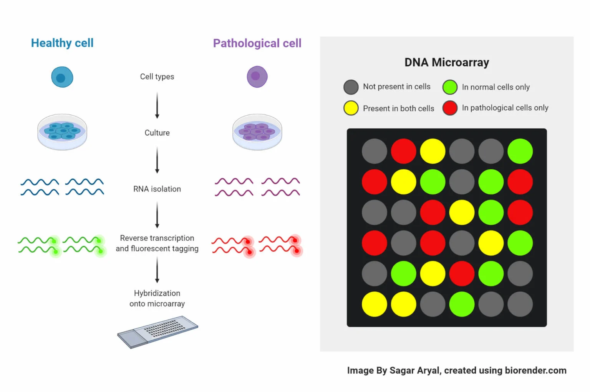
Microarranjos - Microarray (cont.)
- Extração de RNA
- Seleção de mRNA
- Transcrição reversa
- Pode ser fragmentado, ou não
- Ligação de fluoróforo
- Hibridização
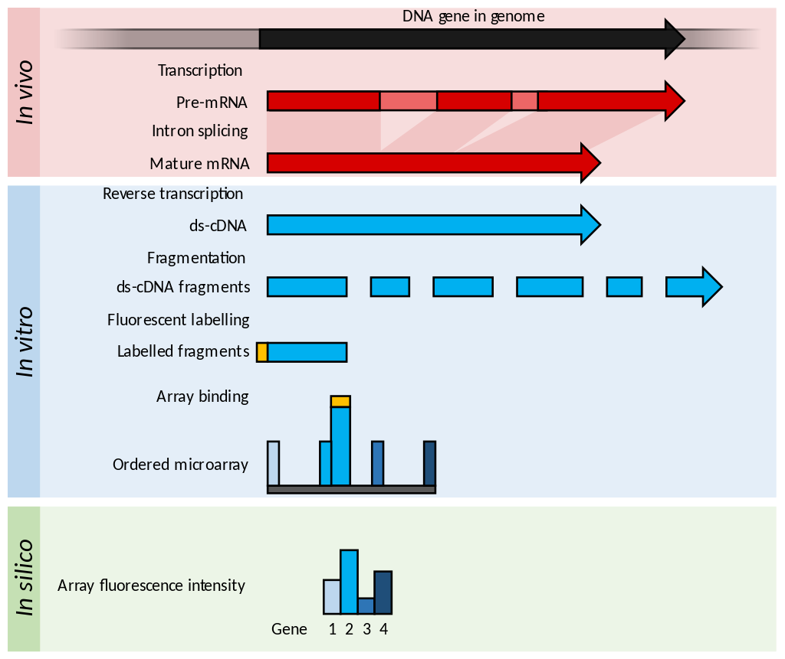
RNA-seq
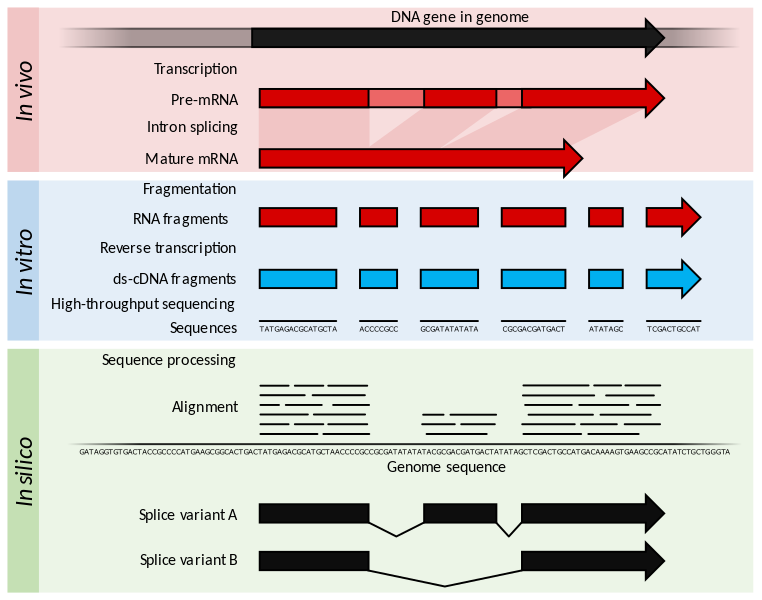
RNA-seq vs Microarranjo (Parte 1: Técnico)
| Característica | Microarranjo de DNA | RNA-Seq | Implicação (Biologia de Sistemas) |
|---|---|---|---|
| Princípio | Hibridização por fluorescência (indireto). | Sequenciamento direto (NGS, reads). | RNA-Seq oferece maior confiança nos dados. |
| Conhecimento Prévio | Requer genoma/sondas conhecidas. | Não requer (descoberta de transcritos novos/isoformas). | RNA-Seq é superior para novos componentes da rede. |
| Faixa Dinâmica | Limitada (saturação / baixa sensibilidade). | Muito ampla (sem saturação). | RNA-Seq capta fatores de transcrição (baixa expressão). |
| Tipo de Dado | Intensidade de fluorescência (contínuo, relativo). | Contagens de reads (discreto, quantificável). | Exige modelos estatísticos distintos (ex: DESeq2). |
| Vieses Técnicos | Hibridização e especificidade de sonda. | Composição de GC e amplificação por PCR. | Ambos exigem correções computacionais específicas. |
RNA-seq vs Microarranjo (Parte 2: Prática e Aplicações)
| Característica | Microarranjo de DNA | RNA-Seq | Implicação (Biologia de Sistemas) |
|---|---|---|---|
| Reprodutibilidade | Alta reprodutibilidade técnica entre plataformas. | Maior sensibilidade para mudanças biológicas sutis. | Microarranjo ideal para estudos longitudinais grandes. |
| Resolução | Mede apenas o que foi projetado. | Resolução de nucleotídeo único (edição, alelos). | RNA-Seq mapeia a regulação pós-transcricional. |
| Custo & Computação | Custo moderado; bioinformática simples. | Custo mais alto; exige infraestrutura robusta. | Orçamento e expertise limitam a escolha da plataforma. |
| Workflow | Padronizado (qualidade \(rightarrow\) normalização \(rightarrow\) dif.). | Complexo (alinhamento, assembly, quantificação). | Requer pipelines robustos para integração em modelos. |
| Aplicação Ideal | Validação em larga escala; painéis específicos. | Descoberta ab initio; integração multiômica. | RNA-Seq constrói modelos; Microarranjo valida hipóteses. |
Co-Imunoprecipitação (Co-IP)
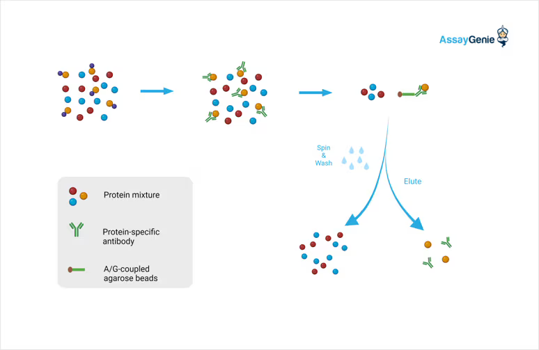
Co-Imunoprecipitação (Co-IP)
Princípio Básico:
- Técnica clássica para isolar complexos proteicos nativos de uma amostra biológica.
- Funciona como um pull-down : usa um anticorpo específico para pescar uma proteína-alvo (isca) e todas as proteínas que estão firmemente ligadas a ela.
Como Funciona:
- Um anticorpo é projetado para se ligar a uma proteína conhecida (a isca, ou bait ) que se acredita fazer parte de um complexo maior.
- O anticorpo, fixado em uma esfera, é adicionado à amostra.
- A proteína-isca e seus parceiros de ligação são capturados e puxados para fora da solução.
- O complexo é purificado e analisado (ex.: por Western Blot ou espectrometria de massa) para identificar as proteínas associadas.
Limitações e Validação
Limitações Importantes:
- Epítopo Oculto: Um anticorpo só captura proteínas que têm o epítopo acessível. Complexos proteicos podem esconder esse epítopo, levando a uma captura incompleta.
- Visão Parcial: A técnica pode isolar apenas uma subpopulação dos complexos presentes na célula.
Estratégia Crucial: Validação por “Rodada Reversa”
- Para confirmar se uma proteína identificada é um parceiro legítimo, o experimento deve ser repetido visando diferentes membros do complexo proposto.
- Resultado Válido: Se ao direcionar a Proteína B, você captura a Proteína A (e vice-versa), a interação é confirmada.
- Resultado Questionável: Se a Proteína X só é capturada com uma isca, mas não com outra, ela pode não ser um membro direto do complexo estável.
Imunoprecipitação da cromatina (ChIP)
- A base para a imunoprecipitação da cromatina é fixar o DNA às proteínas da cromatina
- Tratamento com formaldeído para ligar as histonas ao DNA
- Extrair a cromatina
- Cortá-la em fragmentos viáveis
- Enriquecer para fragmentos de cromatina de interesse por imunoprecipitação com anticorpos específicos para proteínas da cromatina, ou modificações naquelas proteínas de cromatina.
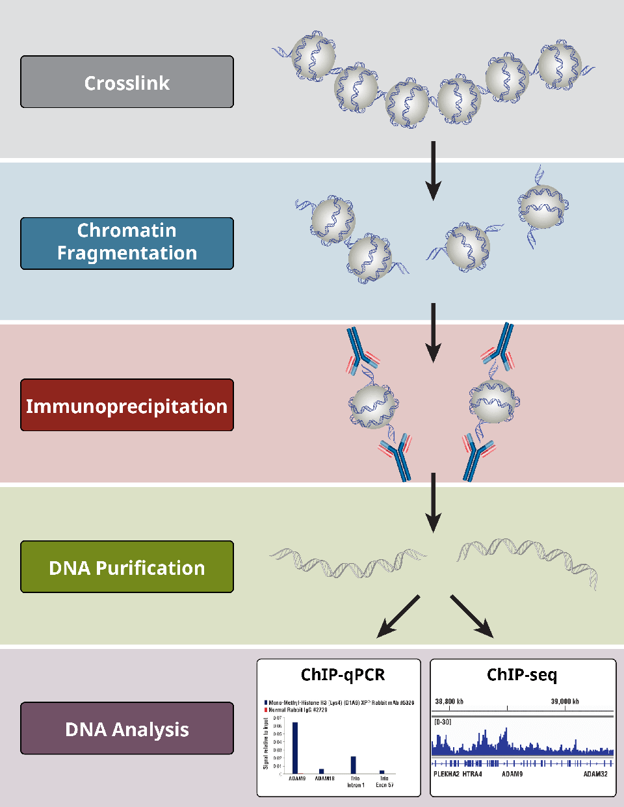
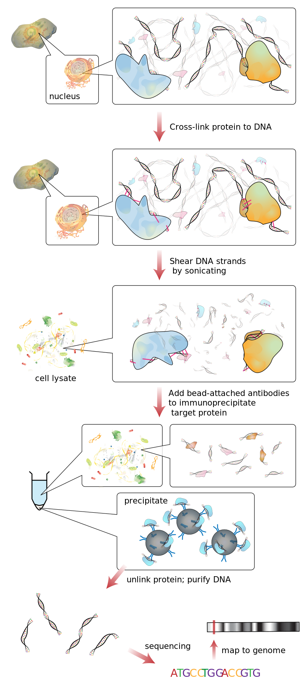
ChIP-seq

- ChIP-PCR (Obsoleto)
Conceito: A etapa final de detecção usa PCR convencional (eletroforese em gel). O resultado é visualizado como uma “banda” em um gel.
Limitação: É apenas qualitativo (mostra se a região está presente, mas não o quanto). É pouco sensível e propenso a artefatos. Foi amplamente substituído pelo ChIP-qPCR.
- ChIP-qPCR (ou Real-Time Quantitative PCR)
Conceito: Usa PCR quantitativo em tempo real (qPCR) para medir com precisão a quantidade de uma região genômica específica presente na amostra imunoprecipitada.
Vantagem: É altamente sensível e quantitativo. Permite comparar o enriquecimento de uma região experimental com um controle (ex.: região não ligante) ou entre diferentes condições.
Quando usar?: É o método ideal para VALIDAR descobertas feitas por ChIP-seq ou ChIP-chip. Se você já tem um candidato (ex., o promotor de um gene X), o ChIP-qPCR é a forma mais rápida e barata de confirmar se sua proteína de interesse se liga lá.
- ChIP-chip (Chromatin Immunoprecipitation on Chip)
- Conceito: O DNA purificado do ChIP é hibridizado em um microarranjo (chip) que contém sondas representando milhares de regiões genômicas conhecidas.
- Vantagem: Foi a primeira tecnologia a permitir perfis genome-wide.
- Desvantagens:
- Só detecta ligações em regiões para as quais há uma sonda no chip (viés de descoberta).
- Resolução espacial limitada.
- Faixa dinâmica menor comparada ao sequenciamento.
- Quase totalmente substituído pelo ChIP-seq, que é mais poderoso e abrangente.
- ChIP-seq ( Chromatin Immunoprecipitation followed by Sequencing )
- Conceito: O DNA purificado do ChIP é sequenciado de forma massiva (NGS). Todos os fragmentos de DNA são lidos, e suas posições no genoma são mapeadas computacionalmente.
- Vantagens:
- Genome-wide imparcial: Não precisa de conhecimento prévio; descobre novos locais de ligação.
- Alta resolução: É possível mapear o sítio de ligação com precisão de base única.
- Ampla faixa dinâmica: Detecta desde locais de ligação muito fortes até os muito fracos.
- Quando usar? É o padrão-ouro atual para descoberta. Use quando quiser mapear todos os locais de ligação de um fator de transcrição ou o genoma-wide padrão de uma modificação de histona (ex., H3K4me3) em uma célula.
Purificação por afinidade
- Técnica de captura de material biológico
- Captura de material biológico via enriquecimento específico com um ligante acoplado a um suporte sólido.
- Muitos tipos de ligandos podem ser usados na purificação por afinidade
- DNA e RNA (na maioria das vezes oligonucleotídeos)
- Produtos químicos
- Lipídios
- Peptídeos ou proteínas
- Anticorpos.

Espectrometria de massa
A Espectrometria de Massa (MS) é uma poderosa técnica analítica utilizada para identificar e quantificar compostos em uma amostra, além de elucidar sua estrutura e pureza. Seu princípio de funcionamento baseia-se em três etapas fundamentais:
Ionização: As moléculas da amostra são convertidas em íons gasosos (geralmente carregados positivamente).
Separação: Os íons são separados no espaço ou no tempo com base em sua relação massa-carga (m/z) dentro de um analisador de massas.
Detecção: Os íons separados são detectados, gerando um espectro que representa a abundância de cada íon em função de sua relação m/z.
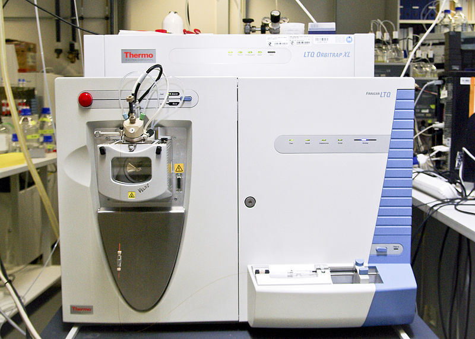

Purificação por afinidade acoplada a espectrometria de massa (AP-MS)
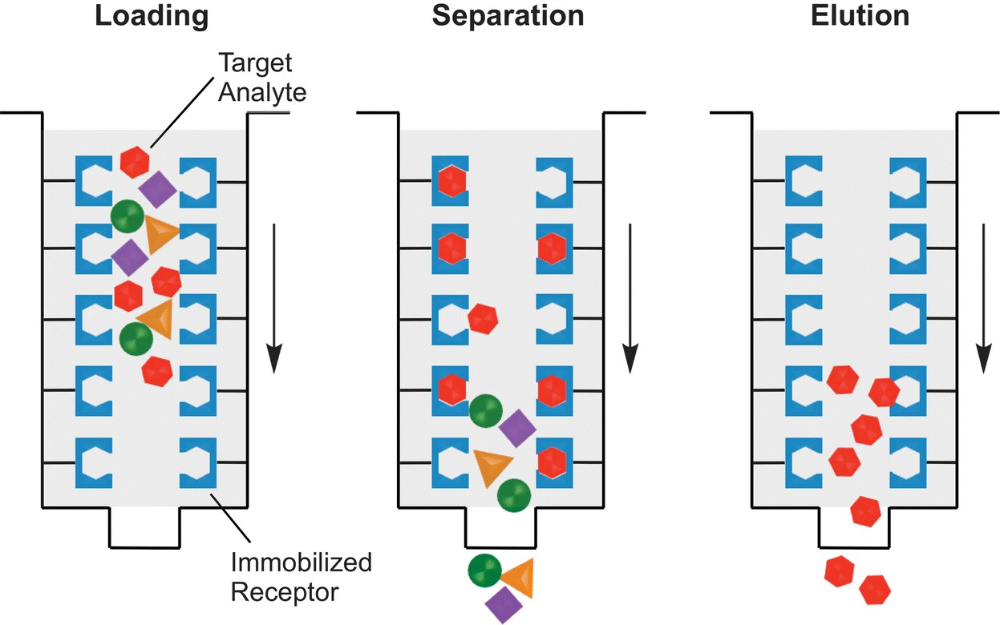
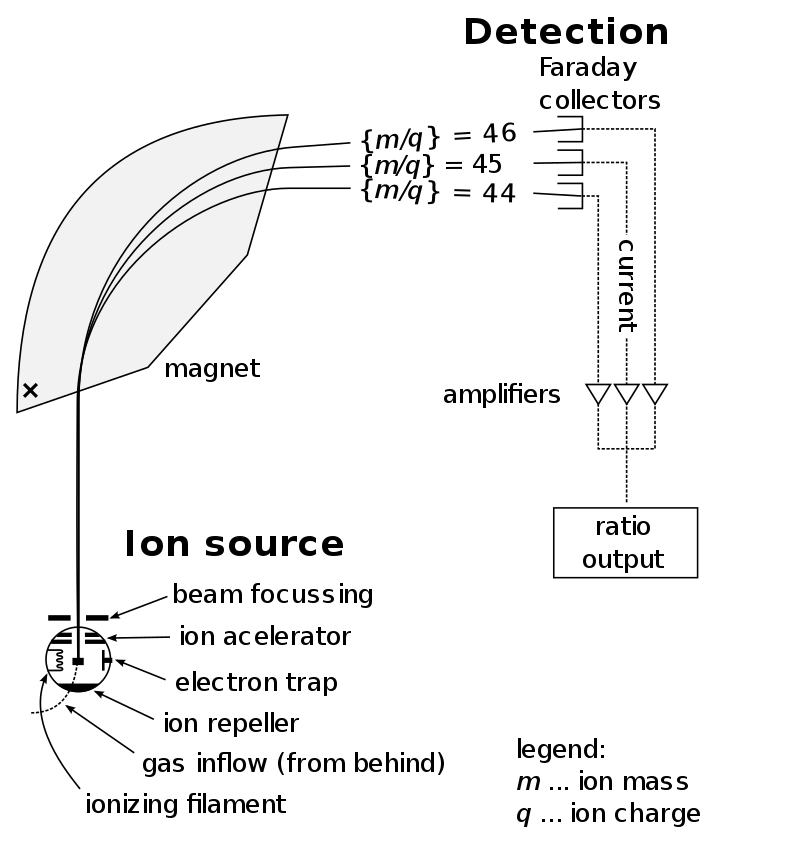
Duplo híbrido em levedura
O Sistema de Duplo-Híbrido de Levedura (Y2H)
O Duplo-Híbrido de Levedura (do inglês, Yeast Two-Hybrid - Y2H) é uma técnica genética poderosa usada para detectar interações físicas entre proteínas. Ele é baseado na reconstituição de um fator de transcrição funcional, que só ocorre quando duas proteínas de interesse interagem.
- A Isca e a Presa
O princípio do sistema envolve dividir um fator de transcrição em duas partes inativas:
Domínio de Ligação ao DNA (BD): A Isca. Esta parte se liga a uma sequência específica de DNA, mas sozinha não pode iniciar a transcrição.
Domínio de Ativação (AD): A Presa. Esta parte é capaz de recrutar a maquinaria de transcrição, mas não pode se prender ao DNA sozinha.
Essas duas partes são fusionadas a proteínas de interesse:
A proteína X é fundida ao BD (Isca-X).
A proteína Y é fundida ao AD (Presa-Y).
O Sistema de Duplo-Híbrido de Levedura (Y2H) (cont.)
Teste da Interação:
Se a proteína X interage com a proteína Y, o BD e o AD são aproximados. Isso forma um fator de transcrição funcional e completo. Este complexo se liga ao DNA e ativa a transcrição de um gene repórter.
Leitura do Resultado:
A ativação do gene repórter produz um sinal detectável, como:
Crescimento em meio de cultura deficiente (ex.: sem histidina).
Mudança de cor (ex.: produção de β-galactosidase que torna a colônia azul).
Produção de luz fluorescente.
Se não houver interação, o gene repórter não é ativado e nenhum sinal é produzido.
Aplicações:
A principal aplicação do Y2H é a descoberta em larga escala de interações proteína-proteína, sendo uma ferramenta fundamental para mapear redes de interação em biologia celular e sistemas.
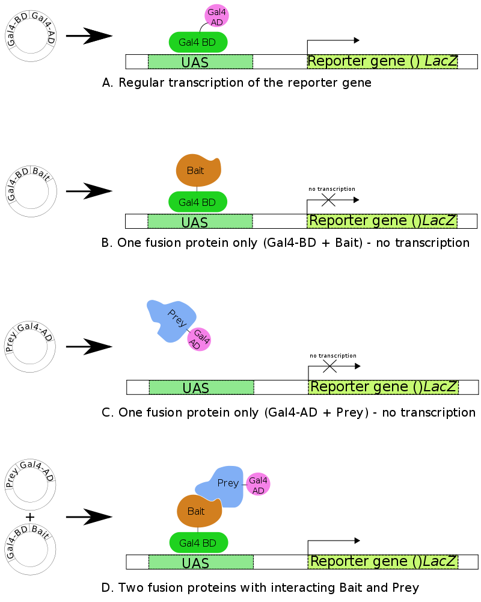

https://en.wikipedia.org/wiki/Two-hybrid_screening
Interólogos
Um interológo é uma interação conservada entre um par de proteínas que possuem homólogos interativos em outro organismo.
Interólogos (cont.)
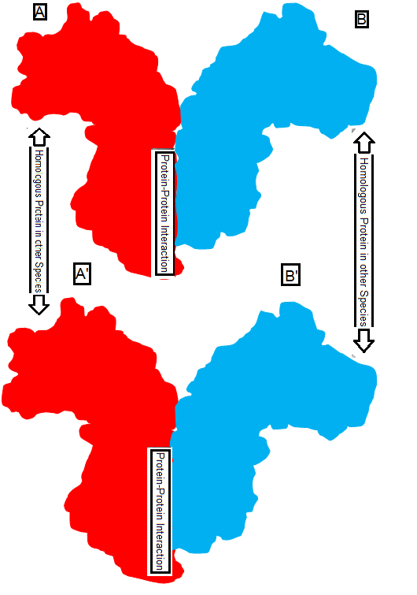
Um interólogo é uma interação proteína-proteína conservada evolutivamente. Se duas proteínas (A e B) interagem em um organismo, e seus homólogos (A’ e B’) também interagem em outro organismo, então a interação A-B é um interólogo da interação A’-B’.
Pré-requisitos para ser um Interólogo:
Para que um par de interações seja considerado interólogo, todas as condições abaixo devem ser verdadeiras:
Homologia Par-a-Par: A proteína A deve ser homóloga à proteína A’, e a proteína B deve ser homóloga à proteína B’.
Conservação da Interação: A interação física entre o par de proteínas deve ser conservada nas duas espécies. Ou seja, A interage com B e A’ interage com B’.
Importância e Aplicação em Biologia de Sistemas:
O conceito de interólogo é extremamente poderoso porque permite prever interações proteicas em uma espécie com base em dados de outra.
Predição de Interações: Se sabemos que a proteína A interage com a proteína B em humanos, e identificamos os homólogos de A e B em um rato (A’ e B’), podemos prever que A’ e B’ também interagem no rato. Isso é fundamental para extrapolar conhecimento de organismos-modelo (como levedura) para humanos.
Inferência Funcional: A conservação de uma interação através da evolução é um forte indício de que ela é funcionalmente importante. Se uma interação foi mantida por seleção natural em espécies diferentes, é provável que ela exerça um papel biológico crucial.
Mapeamento de Redes de Interação: É a base para transferir informações e construir redes de interação proteica (interatomas) para espécies pouco estudadas, usando como base o interatoma de espécies bem caracterizadas.
Coevolução
Vem da ideia de que proteínas que interagem coevoluem na sua superfície de interação.
Vários métodos computacionais estão disponíveis para esse tipo de detecção e podem usar alinhamentos múltiplos, árvores filogenéticas ou modelos matemáticos para prever essas interações.
EC-number
Os números EC são um esquema de classificação numérica para as enzimas, baseado nas reações químicas que catalisam. Como sistema de nomenclatura de enzimas, cada número EC está associado a um nome recomendado para a referida enzima. Na realidade os números EC codificam reações catalisadas por enzimas.
Bancos de dados
Pathguide
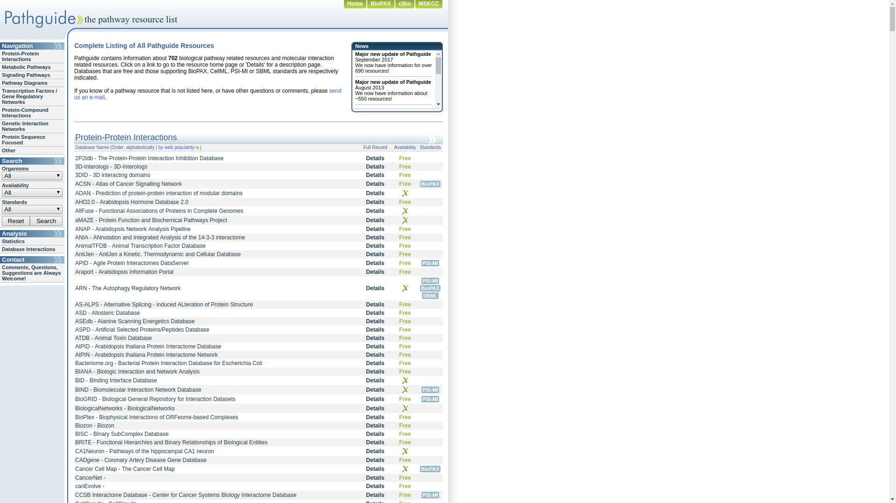
Pathguide contém informação sobre 702 recursos sobre vias biológicas e interações moleculares
Os bancos de dados listados são de acesso livre.
Alguns suportam linguagens de padronização e integração como: BioPAX, CellML, PSI-MI or SBML.
KEGG
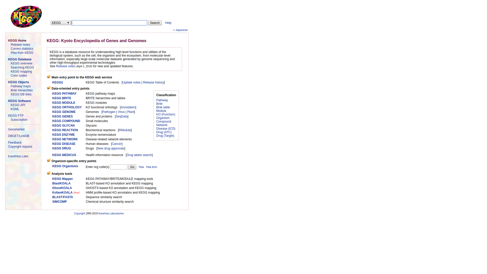
- O KEGG é um banco de dados de recursos biológicos.
- Interpretar funções e processos complexos (de alto nível) em sistemas biológicos, como células, organismos e ecossistemas.
- Integra e analisa dados moleculares.
- Interpretar dados de larga escala, como os gerados por:
- Sequenciamento de genoma.
- Outras tecnologias experimentais de alto rendimento (ômicas).
- Pago.
Gene Ontology (GO)
Objetivo Principal: Desenvolver um modelo computacional abrangente de sistemas biológicos, cobrindo todos os níveis (molecular, celular, de organismo) e abrangendo múltiplas espécies.
O Gene Ontology (GO) é a maior e mais importante fonte de informações sobre as funções de genes.
Serve como base fundamental para a análise e interpretação de dados de experimentos de larga escala (ômicos) em pesquisa biomédica.
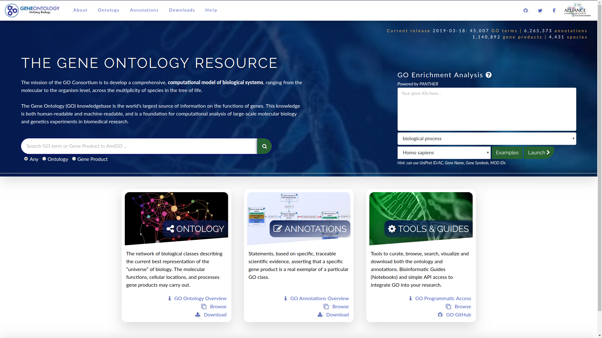
MetaCyc
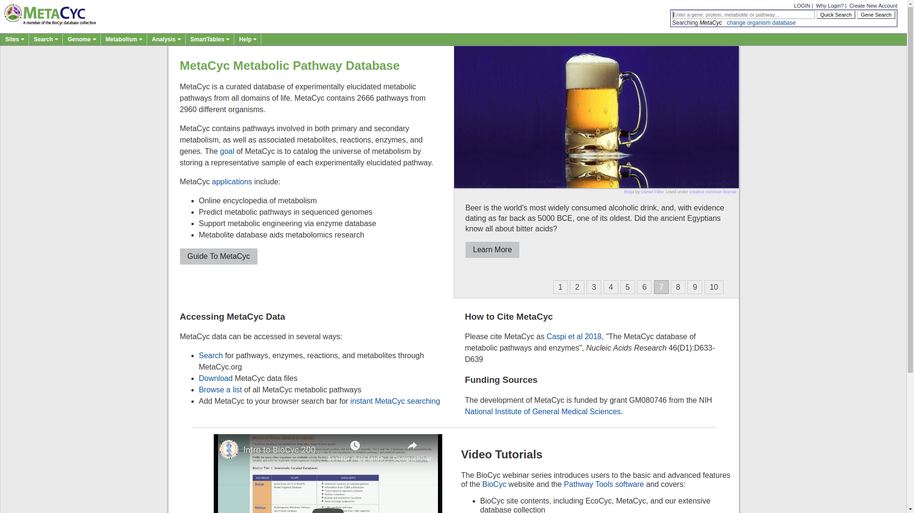
- O MetaCyc é um banco de dados curado de vias metabólicas experimentalmente elucidadas de todos os domínios da vida.
- Contém 2666 vias de 2960 diferentes organismos.
- Metabolismo:
- Primário e secundário.
- Metabólitos.
- Reações.
- Enzimas.
- Genes associados.
- As aplicações do MetaCyc incluem:
- Enciclopédia on-line do metabolismo.
- Prever as vias metabólicas em genomas sequenciados.
- Apoiar engenharia metabólica via banco de dados de enzimas.
- Banco de dados Metabolite ajuda a pesquisa metabolômica.
TRANSFAC
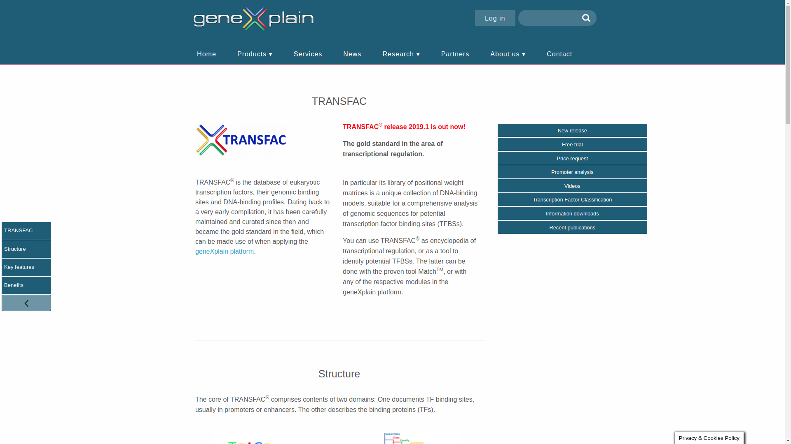
Banco de dados pago.
Contém informação sobre fatores de transcrição, seus sítios de ligação no genoma e seus perfis de ligação.
Banco de dados curado.
STRING
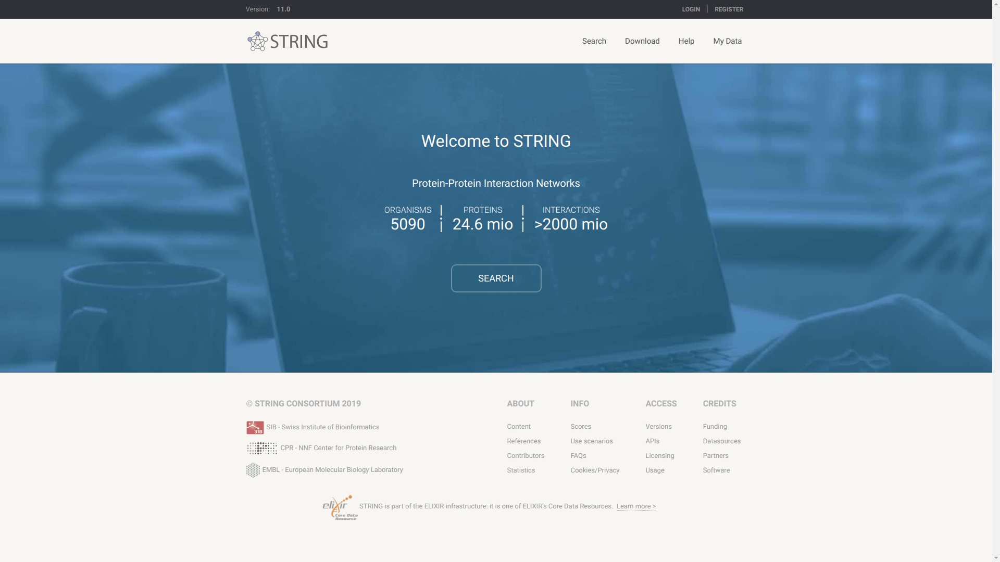
- Banco de dados de interações proteína-proteína conhecidas ou preditas.
- Interações
- Direta: física.
- Indireta: funcional
- A interações podem ter vindo de predição computacional, de transferência de conhecimento entre organismos e de interações descritas em outros bancos de dados.
Reactome
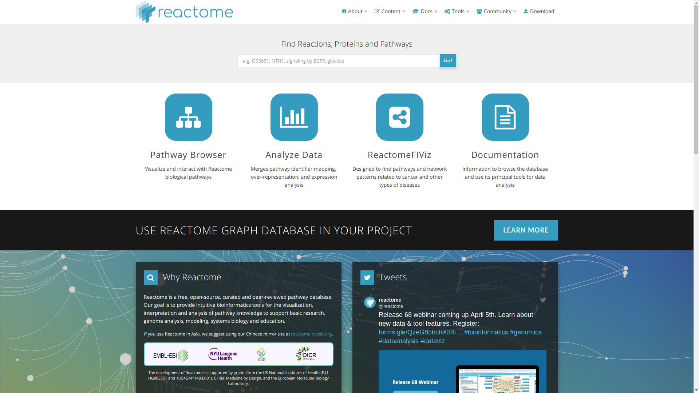
Open-source
Acesso aberto
Curado manualmente e revisado por pares
Fornece ferramentas intuitivas de bioinformática para a visualização, interpretação e análise do conhecimento de vias para apoiar a pesquisa básica e clínica, análise do genoma, modelagem, biologia de sistemas e educação.
IntAct
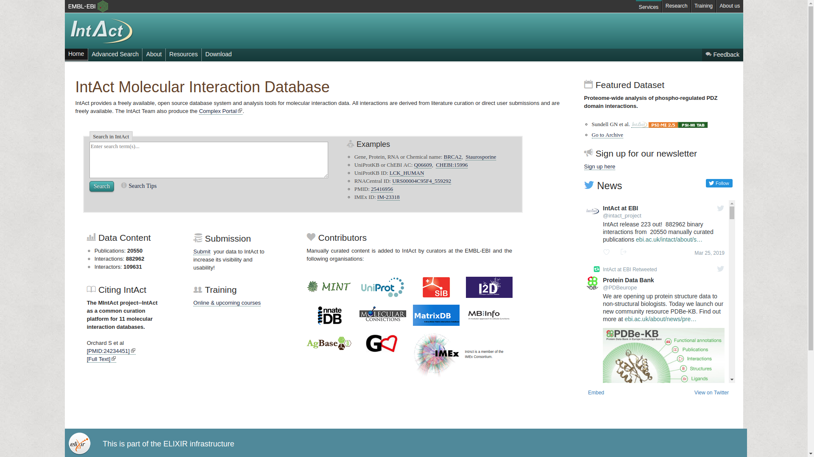
- Acesso aberto.
- Banco de dados e ferramentas de análise.
- Interações derivadas da literatura de maneira curada.
- Interações também podem vir de submissão direta.
BioGRID
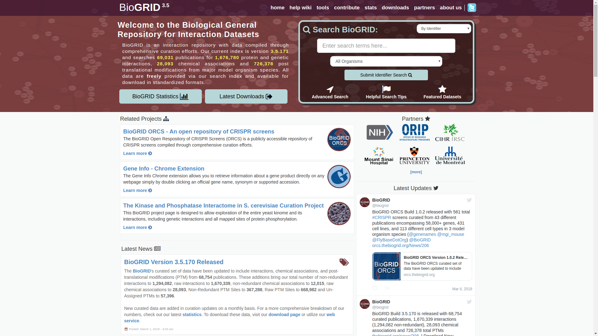
- Dados de interação.
- Curado.
- Dado:
- 69.031 publicações
- 1.676.780 interações proteicas e genéticas
- 28.093 associações químicas
- 726.378 modificações pós-traducionais.
- Acesso livre.
Mineração de texto
Uma técnica computacional que extrai automaticamente informações e descobre padrões com significado (significância) em grandes volumes de texto.
Procura automaticamente na literatura científica (ex.: artigos do PubMed) por palavras-chave e termos específicos para encontrar informações relevantes.
Principais Aplicações em Biologia:
Função de genes/proteínas: Identificar a que processo biológico um gene está associado.
Vias metabólicas: Descobrir em quais vias uma enzima ou metabólito está envolvido.
Interações: Revelar interações entre proteínas (PPIs), genes ou outros biomoléculas descritas no texto.
Regulação: Identificar quem regula quem (ex.: qual fator de transcrição regula qual gene).